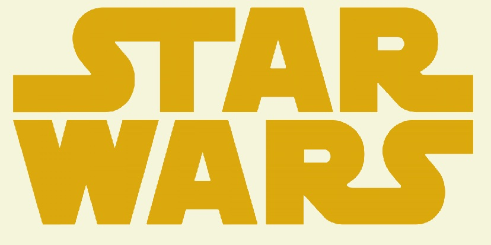
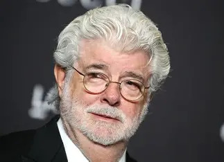

La creation de star wars
Star Wars est crée par un jeune réalisateur californien nommé George Lucas. Dans les années 1960 et 1970, Lucas se passionne pour les films d’aventure, les récits mythologiques et les séries de science‑fiction comme Flash Gordon. Après le succès de son film American Graffiti en 1973, il obtient enfin la liberté de créer un projet plus personnel : un “space opera” moderne, mélange de mythologie, de samouraïs, de western et de science‑fiction.

Au départ, Lucas imagine une histoire très complexe intitulée The Journal of the Whills. Il réécrit son scénario pendant plusieurs années, modifiant les personnages, les noms et les thèmes. Le héros s’appelle d’abord Annikin Starkiller, les jedi sont des chevaliers mystiques, et l’Empire galactique prend forme peu à peu. Lucas s’inspire aussi du cinéma japonais, notamment La Forteresse cachée de Kurosawa, pour la structure du récit et la dynamique maître‑élève.
Mais Hollywood ne croit pas en son projet. La plupart des studios refusent de financer un film jugé trop étrange, trop ambitieux et trop coûteux. Finalement, seule la 20th Century Fox accepte de lui faire confiance, surtout grâce au succès d’American Graffiti. Lucas obtient un budget limité, mais il doit inventer presque toutes les technologies nécessaires pour réaliser les effets spéciaux. Il fonde alors Industrial Light & Magic (ILM), un studio qui révolutionnera le cinéma.
Le tournage, en 1976, est un véritable cauchemar. Les maquettes tombent en panne, les décors se détruisent, les acteurs doutent du projet, et .Lucas lui‑même pense que le film sera un échec. Pourtant, grâce à l’ingéniosité de son équipe et à un montage acharné, Star Wars prend forme.
Le 25 mai 1977, le film sort enfin. Contre toute attente, c’est un triomphe immédiat. Le public découvre un univers vaste, vivant, rempli de mystère et d’émotion. Lucas transforme alors son film en une véritable saga : il développe une trilogie, imagine des préquelles, enrichit l’univers étendu et pousse encore plus loin les innovations technologiques.
Derrière les batailles spatiales et les sabres laser, Lucas construit une mythologie moderne. Il s’appuie sur les archétypes du héros, du mentor, de la tentation et de la rédemption. Il veut raconter une histoire universelle : celle du choix entre le bien et le mal, de la lutte intérieure, de l’amitié et de l’espoir. Et c’est ainsi devenu une saga culte que tout le monde connait de nom au moins.George Lucas
L'histoire de la saga Skywalker
La saga raconte la montée, la chute puis la rédemption de la famille Skywalker, sur fond de lutte entre le côté lumineux et le côté obscur de la Force, la force est une forme d’énergie qui relie chaque chose dans l’univers et elle peut être manipulé par certains être qui on un lien puissant avec.
La premiere trilogie (prélogie)
Tout commence avec Anakin Skywalker, un enfant exceptionnel découvert par les Jedi .Qui va s’avéré être un Jedi d’une très grande puissance, il serra formé par le maitre Obi-Wan Kenobi et participera a la guerre des clones qui divise la galaxie . Manipulé par le chancelier Palpatine,(le dirigeant du sénat galactique), il bascule progressivement du côté obscur, devient Dark Vador et contribue à la destruction de l’Ordre Jedi , permettant à l’Empire galactique de dominer la galaxie. Ses enfants, Luke et Leia, sont cachés pour échapper à l’Empereur.
Le seconde trilogie (la trilogie originel)
Des années plus tard, Luke est formé par Obi Wan , rejoint la Rébellion et apprend la vérité sur son père. Grâce à ses amis, a sa formation qui est complété par le grand maitre Jedi Yoda et à sa propre détermination, il affronte Vador et parvient à réveiller le peu de lumière qui reste en lui. Vador se sacrifie pour sauver son fils et élimine l’Empereur, entraînant la chute de l’Empire.
La derniére trilogie ( la postologie)
Mais des décennies après cette victoire, un nouveau régime autoritaire, le Premier Ordre, émerge. Une jeune femme nommée Rey, sensible à la Force, se découvre un rôle central dans ce nouveau conflit. Elle affronte Kylo Ren, le petit-fils de Vador, tiraillé entre lumière et obscurité. Ensemble, ils finissent par se retourner contre le véritable ennemi : Palpatine, revenu dans l’ombre. Rey refuse l’héritage obscur de l’Empereur et, avec l’aide de Ben Solo revenu au côté lumineux, met fin à sa menace. Elle choisit finalement d’adopter le nom Skywalker, symbolisant la continuité de l’espoir et de la lumière dans la galaxie.
La timeline des differentes productions
Ordre chronologique des Films, Séries et dessins animé de l'univers Star Wars
| Nom | Type/Date | Plot | |
|---|---|---|---|
| The Acolyte | Série | 2024 | Une enquête Jedi révèle le retour des Sith . |
| Star Wars I, La menace phantome | film | 1999 | Un jeune prodige, Anakin, est découvert tandis qu’un Sith réapparaît. |
| Star Wars II, L'attaque des clones | Film | 2002 | La République sombre dans la guerre et Anakin se rapproche du côté obscur. |
| The clone wars | Film | 2008 | Les Jedi mènent la guerre contre les Séparatistes.Et Anakin se voit confié une padawan |
| The clone wars | Dessin animé | 2008-->2020 | Les Jedi mènent la guerre contre les Séparatistes. |
| Star Wars III, La revanche des Sith | Film | 2005 | Anakin devient Dark Vador et l’Empire naît. |
| The bad batch | Dessin animé | 2021 | Des clones défectueux survivent après l’Ordre 66. |
| Solo: A Star Wars Story | Film | 2018 | Origines de Han Solo et rencontre avec Chewbacca. |
| Obi-Wan Kenobi | Série | 2022 | Obi‑Wan protège Leia et affronte Vador. |
| Star Wars Rebels | Dessin animé | 2014--2018 | Une petite cellule rebelle défie l’Empire. |
| Andor | Série | 2022 | Cassian Andor devient un héros rebelle. |
| Rogue One: A Star Wars Story | Film | 2016 | Des rebelles volent les plans de l’Étoile de la Mort. |
| Star Wars IV, Un nouvel espoir | Film | 1977 | Luke rejoint la Rébellion et détruit l’Étoile de la Mort. |
| Star Wars V, L'empire contre-attaque | Film | 1980 | L’Empire triomphe et Vador révèle être le père de Luke. |
| Star Wars VI, Le retour du Jedi | Film | 1983 | Luke sauve Vador qui détruit l’Empereur. |
| The mandalorian | Série | 2019 | Un chasseur protège un enfant sensible à la Force. |
| The Book of Boba Fett | Série | 2021 | Boba Fett prend le contrôle de Tatooine. |
| Ahsoka | Série | 2023 | Ahsoka traque un nouvel ennemi menaçant la galaxie. |
| Skeleton Crew | Série | 2024 | Des enfants perdus dans la galaxie cherchent à rentrer. |
| Star Wars VII, Le réveille de la Force | Film | 2015 | Rey découvre la Force et le Premier Ordre attaque. |
| Star Wars VIII, Les Derniers Jedi | Film | 2017 | Rey cherche Luke, la Résistance est presque détruite. |
| Star Wars IX, L'Ascension de Skywalker | Film | 2019 | Rey affronte Palpatine et choisit le nom Skywalker. |
Il existe quelques séries anthologique où l'époque dépend de l'épisode:
| Nom | Type/Date | Plot | |
|---|---|---|---|
| Tales of the Jedi | Dessin animé | 2022 | Histoires courtes centrées sur Ahsoka Tano et le Comte Dooku, explorant leur passé et leurs choix. |
| Tales of the Empire | Dessin animé | 2024 | Récits parallèles sur Barriss Offee et Morgan Elsbeth, montrant la montée de l’Empire. |
| Tales of the Empire: Underworld | Dessin animé | 2025 | Histoires centrées sur les criminels, chasseurs de primes et organisations clandestines de la galaxie, loin des Jedi et des Sith . |
| Star Wars: Visions | Animé | 2021 | Anthologie d’épisodes indépendants créés par des studios d’animation du monde entier. !!NON CANON!! |